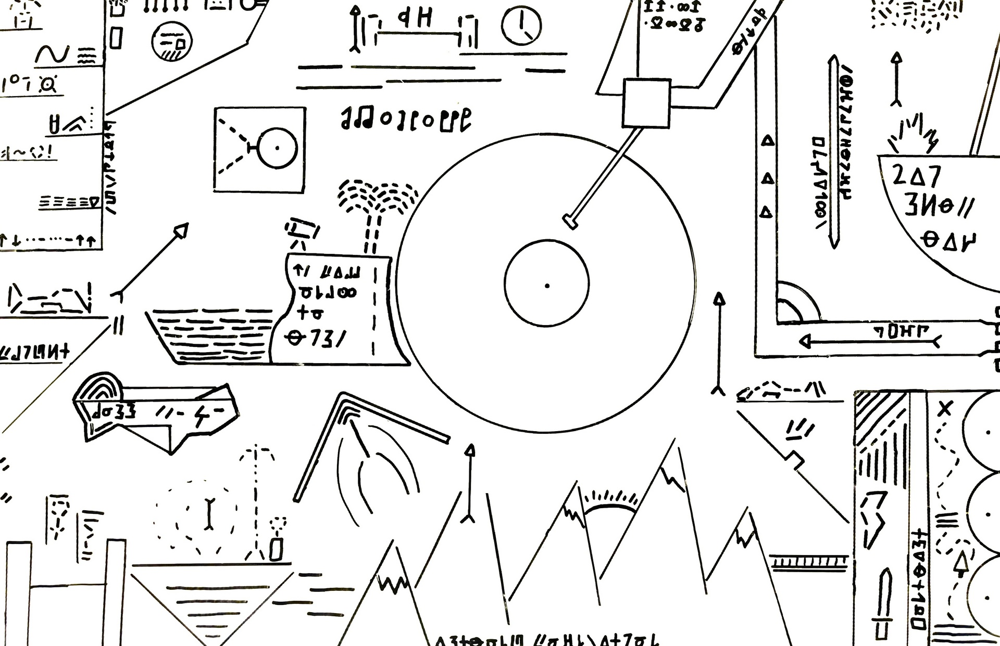

1. Roads to Mussoorie
2. A Nation of Idiots
3. A Short History of Nearly Everything
4. The Great Train Journey
5. MAHAGATHA
6. Chanakya Neeti
7. Tales from my Heart
8. how to
9. Make Epic Money
10. The Lessons of History
11. How to Live your life
12. How to be Happy
13. Gita Wisdom Through Quotes
14. Rain in the Mountains
15. Sapiens
16. Politics
17. A Complete History of India
18. Nai Kahaniya
19. Meditations
20. Around the world in 80 days
21. Don't you have time to think
22. Don't sell make them buy
23. Deep Work
24. All time favourite nature stories
25. The Creative Act, A way of Being
26. The Melodies of India
27. The 12 Week year
28. The Mountain is You
29. Like the Flowing river
30. The India I love
31. The Penguin Book of Japanese Short Stories
32. The Count of Monte Cristo
33. Letters From a Stoic
34. Old Mountains, New Echoes
35. 100 Selected Poems of William Wordsworth
36. White Nights
37. Fantastic Mr Fox
38. Monkey Trouble and other Stories
39. The Daily Stoic
40. The Motorcycle Diaries
41. The Road to the Bazaar
42. Journeys to Remember
43. Unmind
44. Landour Days
45. Walden
46. Beyond Thoughts
47. Ruskin Bond Collected Short Stories
48. The Importance of Being Ernest
49. The Subtle art of not giving a f_ck
50. The Picture of Dorian Gray
51. Watership Down
52. The Upanishads
53. Siddhartha
54. The Communist Manifesto
55. The Bhagvad Gita
56. Room on the Roof
57. Classic Ruskin Bond Vol1
58. Discourses and other writings
59. The Ramcharitmanas Vol1
60. The Ramcharitmanas Vol2
61. The Ramcharitmanas Vol3
62. The Atlas of Amazing Birds
63. The Little Book of Everything
64. An Indian Summer of Steam
65. Watership Down The Graphic Novel
66. Book of Nature
67. A book of Simple Living Notes from the hills
68. Ways of Seeing
69. Tales from Watership Down
70. East of Eden
71. Agua Viva
72. Indragita
73. Potpourri
74. Jonathan Livingston Seagull
75. Aimless in Banaras
76. Don Quioxte
77. The Country of the Pointed Firs
78. The Paper Menagerie and Other Stories
79. My Time in the Town
80. Only Dull People are Brilliant at Breakfast
81. Wind in the Willows
82. Southern Mail & Night Flight
83. The Brothers Karamazov
84. A Kingdom Remembered
85. The King's Harvest
86. Scenes from a Writers Life
87. The Lamp is Lit
88. Notes from a Small Room
89. The Sunflower and the Moon
89. Valmiki Ramayana 1
90. Valmiki Ramayana 2
91. Valmiki Ramayana 3
92. Murder on the Orient Express
93. The Great Gatsby
94. On the Shortness of Life
95. The Art of thinking in graphs
